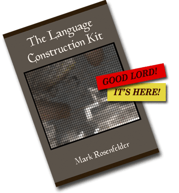

Caja de herramientas para construir idiomas
 The Language Construction Kit (original version, written by Mark Rosenfelder)
The Language Construction Kit (original version, written by Mark Rosenfelder)
 O Kit de Construção de Línguas (em português; traduzido por Gustavo Pereira)
O Kit de Construção de Línguas (em português; traduzido por Gustavo Pereira)
 Il Kit di Costruzione di Linguaggi (in italiano; tradotto per Daniele "MadMage" Calisi)
Il Kit di Costruzione di Linguaggi (in italiano; tradotto per Daniele "MadMage" Calisi)
 Der Sprachbaukasten (auf Deutsch; übersetzt von Carsten Becker)
Der Sprachbaukasten (auf Deutsch; übersetzt von Carsten Becker)
Traducido del inglés al español por Renato Montes para el sitio Idiomas imaginarios.
|  |
La Caja de herramientas también está disponible en una edición impresa, cuatro veces mayor en longitud, publicada por Yonagu Books en Amazon (solo disponible en inglés). |
También disponible: ¡volumen 2 — Advanced Language Construction! ¿Te parece algo básico la Caja de herramientas impresa, y quieres profundizar en la morfosintaxis, los idiomas con sistemas de escritura logográficos, la lógica de predicados y más? ¡Obtén la secuela ahora!
Mi último libro es The Conlanger’s Lexipedia: todo sobre crear palabras que no sean una simple copia del inglés.
Este juego de páginas web (¿qué sería un juego de páginas web? ¿un capítulo de páginas web?) ha sido escrito teniendo en mente a quien quisiera crear idiomas artificiales —para un mundo alienígena o de fantasía, como un pasatiempo, como un idioma de comunicación internacional. Presenta métodos lingüísticos razonables para crear idiomas naturalistas, los cuales también podrían ser transgredidos para crear idiomas no naturalistas. Se sugiere además otro contenido para aquellos que quieran saber más, así como atajos para los que quieran saber menos.
—Mark Rosenfelder
Lo anterior es una oración ilustrativa en un idioma artificial mío, el verduriano. Si te da curiosidad, lo que dice es Ďitelán mu cum pén veaďen er mësan so Sannam, que significa “Vayan (ustedes) en paz para amar y servir al Señor”. La Ď con acento suena como la th del inglés then, o la d del español nada; las vocales deberían pronunciarse más o menos como en español. He aquí una grabación por Joseph Fatula leyendo la frase.
¿Qué hay de un combo de páginas web? ¿Suena mejor así?
Chico: OK, tú sé el colombiano de las páginas web, y yo seré el japonés de Taringa y Asco de Vida.
Para poder escribir esta inscripción, antes tuve que:
- Decidir sobre los sonidos del idioma
- Crear el léxico o vocabulario
- Crear la gramática
- Diseñar un alfabeto
- Diseñar cómo el alfabeto se modifica al escribir a mano
- Traducir el texto deseado
Dos reacciones que quizá tengas ante esto:
El orden de los pasos arriba es importante. Si se hace al revés (creando un texto primero y luego diseñando la gramática que corresponda), eso lleva a un resultado inconsistente o incluso incoherente.
Un mal ejemplo sería el syldavo de Hergé, ya que él prácticamente lo inventaba cada vez que lo necesitaba. Es imposible crear una fonología o morfología consistente para ese idioma, basado en las frases cortas en el idioma de los libros de Tintín. (Aun así, eso no me detuvo para hacer mi mejor intento de una gramática del syldavo.)
¡Empecemos!
El resto de la caja de herramientas se divide en tres partes:
 |
Lo básico: los modelos, sonidos, sistemas de escritura y construcción de palabras. |
 |
La gramática: la morfología y la sintaxis, más un vistazo al estilo y a las familias de idiomas. |
 |
Poniéndolo en el papel: consejos para ir desde la página vacía hasta una gramática de referencia completa. |
Si quieres leer estos documentos como un libro electrónico, se encuentra disponible en Amazon (solo la versión en inglés) por nada más que US$0.99.
¿Ahora qué hago?
He aquí una lista de recursos en línea (en inglés).
Para mucha más información, ¡dale un vistazo a la versión impresa! (en inglés)
Una vez que estés listo para construir planetas enteros, dale un vistazo al Planet Construction Kit.
Inicio >